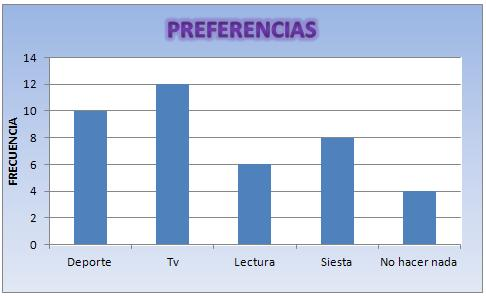

Representación de datos
Los pasos que se deben seguir para tratar toda la información recogida serían:
- Construir tablas: en las que apareciesen
- xi= diferentes datos de la variable
- fi= nº de veces que aparece cada dato
- fri= la frecuencia de cada dato entre el total de datos(N).
- Representarlos en gráficas: utilizar el gráfico adecuado, para el tipo de datos que estamos manejando.
- Diagrama de barras= se utiliza para variables cuantitativas discretas.Barras aisladas y de altura su fi.
- Histograma= se utiliza para variables cuantitativas continuas. La base de los rectángulos debe ser igual al ancho de los intervalos y su altura la fi.
- Polígono de frecuencias= es el que une los puntos medios de los rectágulos.
- Diagrama de sectores= se puede utilizar para cualquier tipo de variable, aunque es más frecuente su uso en las cualitativas. El nº de grados de cada sector, debe ser proporcional a su fi.
Actividad
GRÁFICOS ESTADÍSTICOS
Debes construir una hoja de cálculo que permita representar, de distintas formas, varias tablas de frecuencias. Para realizar esta práctica sigue los siguientes pasos:
|
PREFERENCIAS |
FRECUENCIA |
|
Deporte |
10 |
|
Tv |
12 |
|
Lectura |
6 |
|
Siesta |
8 |
|
No hacer nada |
4 |
· Construir la tabla:
Asociado a esta tabla, hay que insertar un diagrama de barras, insertando el gráfico apropiado y teniendo presente que los valores de x, deben ser los de la 1ª columna de la tabla. Los valores del eje vertical ( eje Y) , deben ser los correspondientes a los de la 2ª columna de la tabla, quedando:

Asociado a la misma tabla y con las mismas precauciones, insertaremos el siguiente diagrama de sectores:
· Construir la tabla:
|
NOTAS |
FRECUENCIA |
|
3 |
2 |
|
4 |
3 |
|
5 |
6 |
|
7 |
4 |
|
9 |
2 |
Asociado a ésta tabla insertar el gráfico: